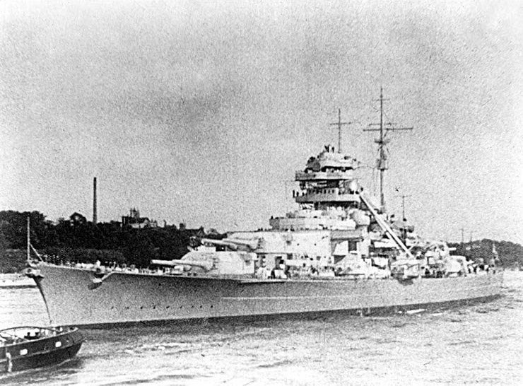

Tirpitz
Hermana del Bismarck, conocida como el 'lobo solitario del norte', mantuvo a la Royal Navy en alerta constante en aguas noruegas.

Buque de la clase Bismarck
Compartía el diseño general de su gemelo, pero su equipamiento y armamento cambiaron durante el servicio.
Operaciones desde Noruega
Su presencia obligó a considerar la amenaza a los convoyes aliados. Fue objeto de sucesivas operaciones británicas.
Ataque final
El 12 de noviembre de 1944 bombarderos Lancaster atacaron el buque cerca de Tromsø con bombas Tallboy. El Tirpitz volcó y se hundió.
Efecto estratégico de una flota en potencia
El Tirpitz podía influir sobre las decisiones británicas aunque permaneciera en un fondeadero noruego. La posibilidad de una salida contra las rutas de convoyes obligaba a mantener vigilancia y fuerzas de cobertura. Esta relación entre amenaza potencial y asignación de recursos explica por qué su historia incluye operaciones destinadas a neutralizarlo antes de un combate convencional.
Fondeaderos, protección y ataques
La presencia del buque en Noruega hizo importantes el reconocimiento de sus posiciones, la defensa local y las posibilidades de reparación. Su neutralización requirió operaciones sucesivas y medios diferentes. La operación Catechism constituye el episodio final de esa campaña, y debe situarse dentro de los intentos previos de limitar su disponibilidad operativa.